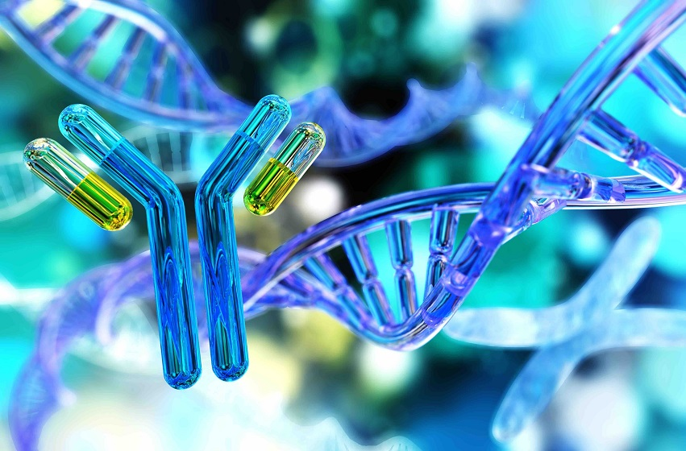

BIOTECNOLOGIA- Últimas Notícias
Por: Isadora Marcondes
24/03/2023 07:50


BIOTECNOLOGIA- Últimas Notícias
Cientistas brasileiros conseguiram desenvolver uma técnica para facilitar o diagnóstico de câncer a partir de amostras de saliva e urina. O método se consiste em: transformar as amostras em vapor, em seguida são extraídos compostos votáveis para identificar alterações que servem para achar a doença. Lembrando que a técnica ainda é experimental, mas a possibilidade abrem portas para exames menos invasivos com a descoberta do câncer, sem contar que não precisaria de tanto equipamento, logo, custo seria reduzido. Tendo ideia que os exames usados ultimamente pelos médicos para identificar o câncer, são: mamografia, tomografia, ressonância magnética, endoscopia, colonoscopia, exames de sangue e biópsia. Esses métodos são todos seguros e eficazes, entretanto, esses procedimentos são invasivos, trabalhosos e precisam de profissionais altamente qualificados.

Espero que chegue no SUS!
Que maneiro essa evolução!
Surpreendente! Espero que possamos chegar em um cenário que as pessoas não sofram mais por essa doença.